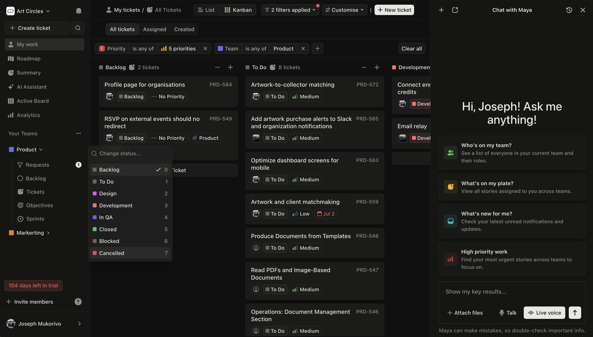
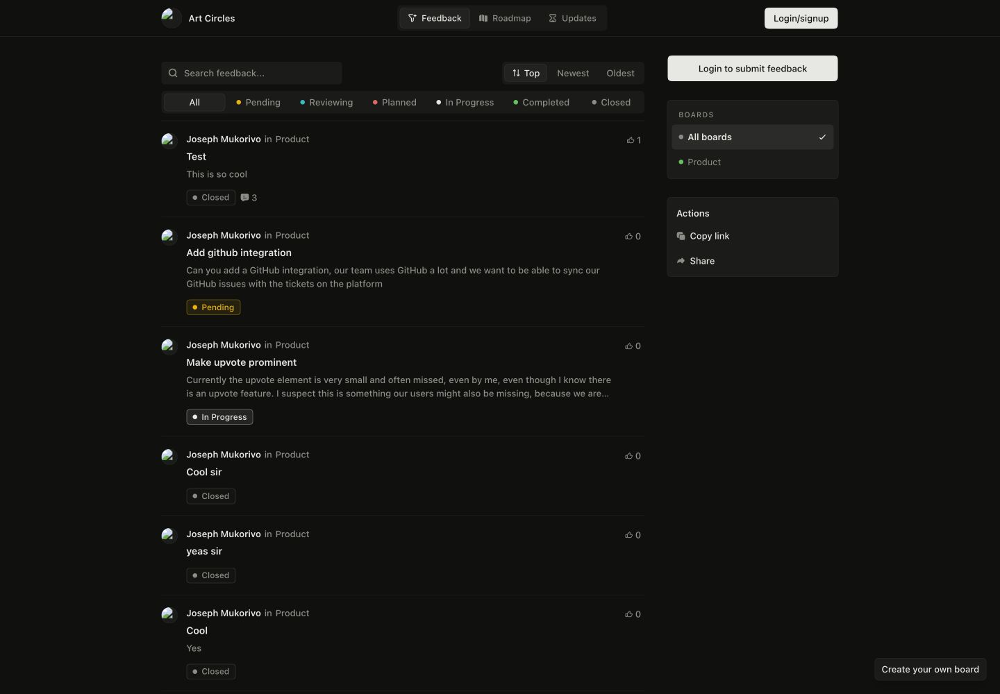
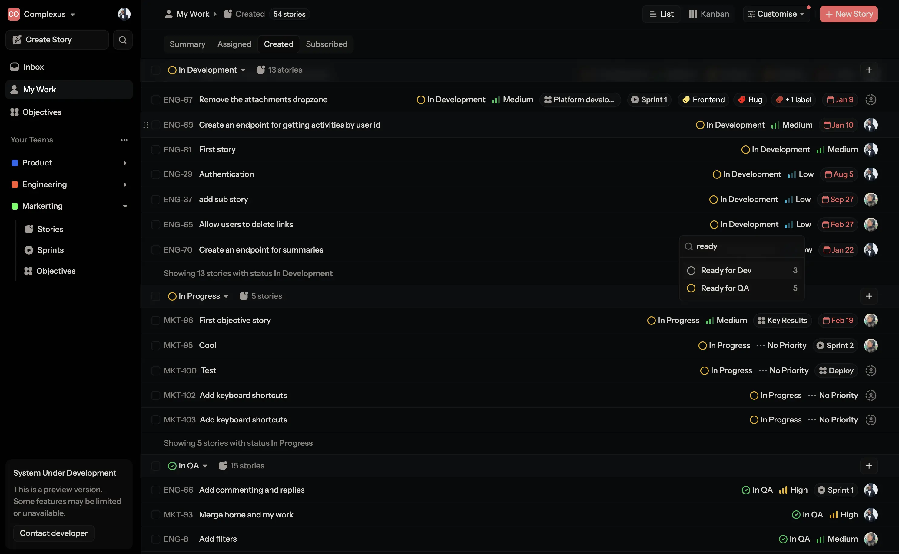
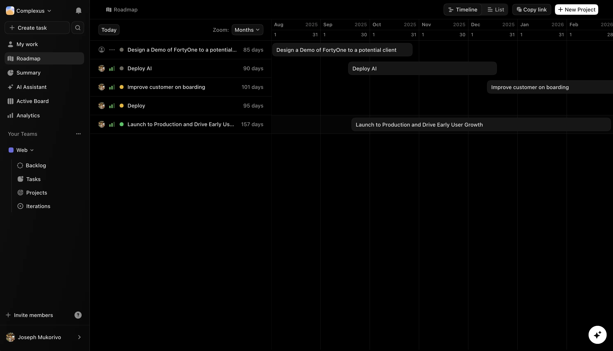

Plan and deliver projects with customer feedback built in.
Collect requests, decide what matters, and move accepted feedback into the project plan without losing its context.

The system
One request can become shipped work.
FortyOne gives customers a place to ask, gives teams a place to decide, and keeps the request attached as the work moves through planning and delivery.
- 01 Feedback Capture the request
- 02 Review Decide what matters
- 03 Plan Set the goal and scope
- 04 Deliver Own and schedule the work
- 05 Roadmap Share progress clearly
01 / Feedback
Start with the customer
Give people a clear place to ask.
Customers can submit feedback, vote on existing requests, and join the discussion. The team sees the demand before deciding what to build.

02 / Planning
Make the decision useful
Turn accepted feedback into a real plan.
Add a goal, owner, estimate, and schedule while keeping the original request close. The work starts with the reason it matters intact.

The principle
Keep the customer request connected to the work that delivers it.
Everyone can see what was requested, why it was chosen, who owns it, and where it is in the plan.
03 / Roadmap
Close the loop
Show what is planned, active, and done.
The roadmap reflects the work already in the plan, so customers can follow progress while the team keeps delivering from one place.

Built around the plan
The system around the work.
Six connected parts, so the team spends less time moving context between tools.
- 01 Feedback portal
- Submit, vote, comment, and follow progress.
- 02 Review queue
- Route requests to the team that owns the work.
- 03 Goals and projects
- Keep every task tied to the outcome it supports.
- 04 Capacity and schedule
- Check workload and availability before assigning work.
- 05 AI planning
- Turn context into a practical starting plan.
- 06 Connected tools
- Bring conversations, files, calendars, and commits into view.
Connected context
Your tools bring the context. FortyOne turns it into a plan.
Keep the tools your team already uses while FortyOne connects the signals that shape the work.
- Slack
- GitHub
- Google Calendar
- Microsoft Teams
- Google Drive
- Notion
Start with one team
Give the team one clear plan.
Bring customer feedback and project delivery into the same system, without losing the context between them.